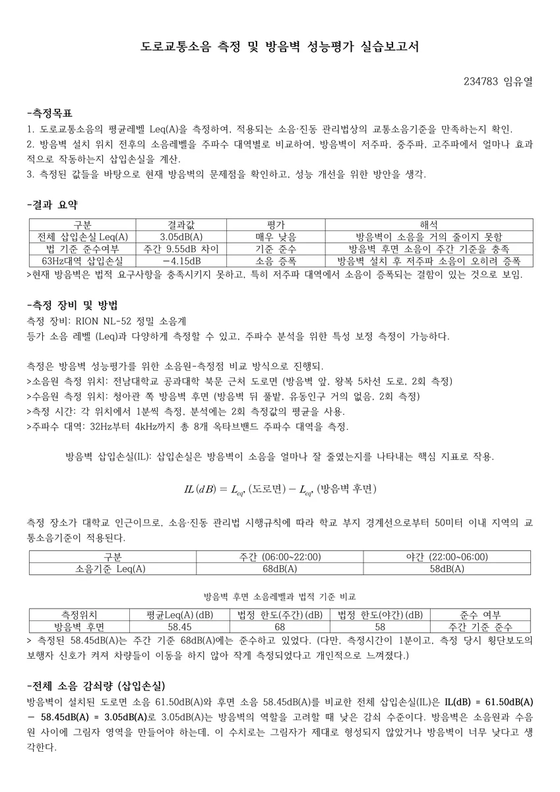
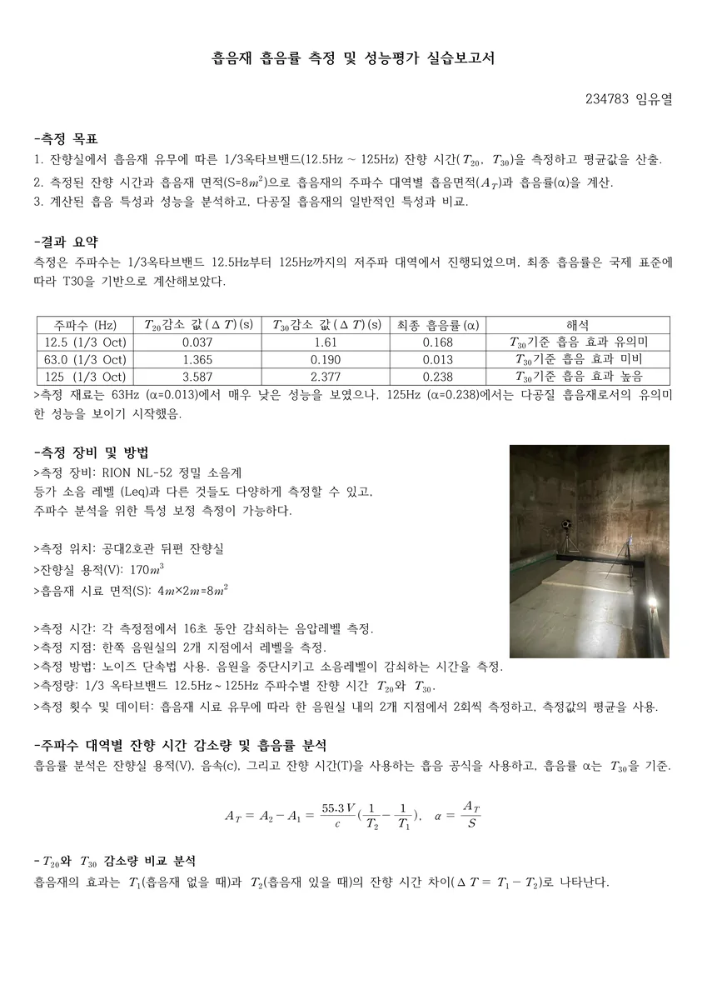
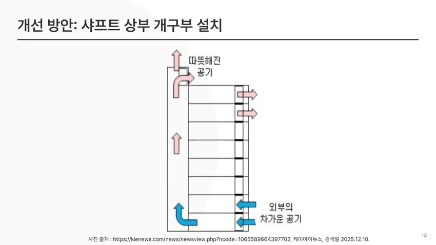
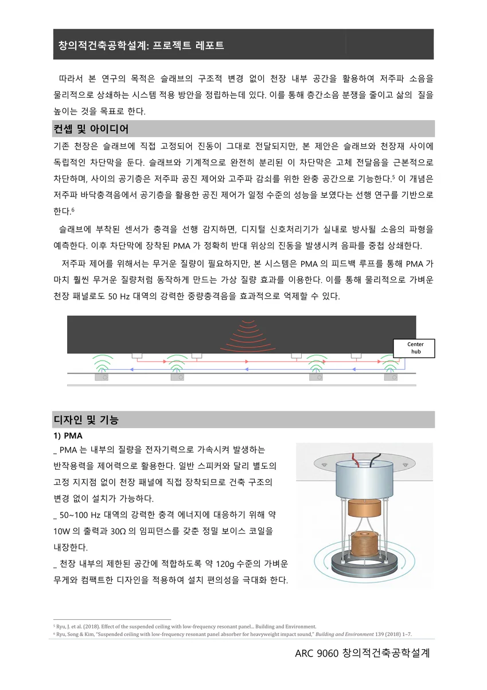

재료 연구 제안작품 보기
재료 연구 제안작품 보기건축재료
초음파로 탐구한 콘크리트의 회복
탄산화된 콘크리트에 알칼리 이온을 더 깊고 빠르게 전달할 수 있을까. 초음파와 확산 모델을 연결해 보수 기법의 가능성을 탐구했습니다.
YEAR 03 / ENGINEERING
2025
3학년부터 전남대학교 건축공학과에서 배움을 이어갔습니다. 주거의 공간 관계를 설계하고, 재료·소리·온열 환경을 탐구하며 건축을 구현하는 방법으로 관심을 넓혔습니다.
2025 · 건축재료 · 주거형태와문화
콘크리트 보수 기법을 연구하고, 세 개의 정원이 실내와 맞물리는 단독주택을 계획했습니다.
2025 · 건축음향 · 환경조절 · 창의적 설계
세 가지 음향 실험, 승강기 환경 개선 팀과제, PC 접합부와 바닥충격음 시스템 제안을 담았습니다.

현장 측정·분석작품 보기건축음향
도로변과 방음벽 후면의 소음을 직접 측정하고, 전체 레벨과 주파수별 차이를 비교했습니다. 평균값 하나로 설명되지 않는 현장 소음의 특성을 읽었습니다.
 잔향실 측정·분석작품 보기
잔향실 측정·분석작품 보기건축음향
음원실과 수음실에서 핑크노이즈의 레벨을 측정하고 차이를 분석했습니다. 예상과 다른 값에서 출발해 측정 조건과 해석의 한계를 검토했습니다.

흡음률 측정·분석작품 보기건축음향
흡음재를 넣기 전과 후의 잔향시간을 비교하고, 저주파 대역의 흡음률을 계산했습니다. 재료의 효과가 주파수에 따라 어떻게 달라지는지 분석했습니다.

환경 측정·개선 제안작품 보기건축환경조절시스템설계
유리 승강로의 온열 환경을 측정하고, 일사와 공기 정체가 만드는 차이를 분석했습니다. 상부 환기와 비운행 시간의 공기 교환을 결합한 개선안을 제안했습니다.
 시공 공법 제안작품 보기
시공 공법 제안작품 보기창의적건축공학설계
전자기 유도가열, 강섬유, U-bar를 결합해 PC 습식 접합부의 양생과 연결 성능을 함께 개선하는 공법을 제안했습니다. 건축시공기술대전 우수상 수상작입니다.

시스템 아이디어 제안작품 보기창의적건축공학설계
슬래브의 진동을 감지하고 분리된 패널의 움직임을 제어해, 공기층으로 전달되는 저주파 충격음을 줄이는 시스템을 구상했습니다.